- Che cos'è NutriDash
- Creare il tuo account
- Mettere l'app sul telefono
- Il primo avvio: il tuo piano
- Segnare la giornata
- Pasti, piatto unico e pasto libero
- L'acqua
- Come va la settimana
- Lista della spesa e storico
- Peso e misurazioni
- Il tuo profilo e il PIN
- Modificare il piano nutrizionale
- Più dispositivi e sincronizzazione
- Backup ed esportazioni
- Aggiornamenti dell'app
- Domande frequenti
1 Che cos'è NutriDash
NutriDash è un diario alimentare: ogni giorno spunti quello che hai mangiato scegliendo dalle opzioni del tuo piano, e l'app calcola calorie e nutrienti, tiene il conto dell'acqua e ti mostra come sta andando la settimana.
Non è un contacalorie generico: parte da un piano organizzato in pasti (colazione, spuntini, pranzo, cena) con porzioni già definite, quindi ti basta spuntare, non pesare e cercare ogni volta.
2 Creare il tuo account
Apri il link dell'app. La prima cosa che vedi è la schermata di accesso.
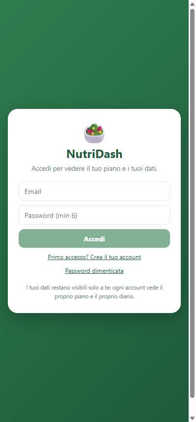
- Tocca “Primo accesso? Crea il tuo account”.
- Scrivi la tua email e una password (almeno 6 caratteri).
- Tocca Crea account. Entri subito.
Le volte successive ti basta Accedi con la stessa email e password. Di solito non dovrai rifarlo: l'app ti tiene connesso.
3 Mettere l'app sul telefono
Così la apri con un'icona, come una normale app, senza passare dal browser.
iPhone (Safari)
- Apri il link con Safari.
- Tocca il pulsante Condividi (il quadrato con la freccia in su).
- Scegli “Aggiungi a Home” e conferma.
Android (Chrome)
- Apri il link con Chrome.
- Menu ⋮ in alto a destra.
- Scegli “Installa app” o “Aggiungi a schermata Home”.
4 Il primo avvio: il tuo piano
Subito dopo la registrazione l'app ti fa qualche domanda per costruire un piano della tua misura. Ci vogliono due minuti e potrai cambiare tutto in seguito.
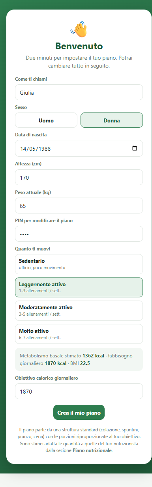
- Nome, sesso, data di nascita, altezza, peso
- Servono a stimare il fabbisogno e a calcolare il BMI.
- PIN per modificare il piano
- Da 4 a 8 cifre. Serve solo a evitare che tu cambi il piano per sbaglio (vedi punto 11).
- Quanto ti muovi
- Da sedentario a molto attivo: alza o abbassa il fabbisogno stimato.
- Obiettivo calorico giornaliero
- L'app propone un valore calcolato, ma puoi scrivere quello che ti ha dato il tuo nutrizionista.
Quando tocchi Crea il mio piano, l'app costruisce un piano completo con colazione, spuntini, pranzo e cena e riproporziona le porzioni al tuo obiettivo.
5 Segnare la giornata
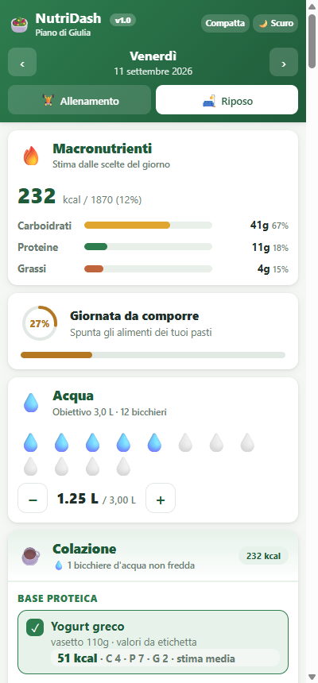
Dall'alto verso il basso:
- La data, con le frecce ‹ › per spostarti al giorno prima o dopo (sul telefono funziona anche lo scorrimento con il dito verso destra o sinistra).
- Allenamento / Riposo: scegli com'è la giornata. Nei giorni di allenamento il piano prevede porzioni e pasti diversi.
- Macronutrienti: calorie, carboidrati, proteine e grassi di quello che hai spuntato, confrontati con il tuo obiettivo.
- Completamento: la percentuale di pasti che hai già compilato.
- Acqua e poi i pasti uno sotto l'altro.
In fondo alla giornata c'è “Azzera questa giornata” se vuoi ricominciare da capo.
6 Pasti, piatto unico e pasto libero
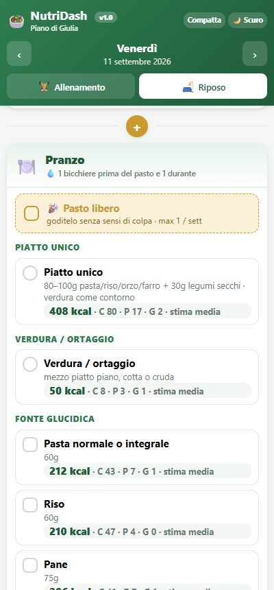
Ogni pasto è diviso in gruppi (fonte proteica, fonte glucidica, verdura…). Tocchi l'alimento che hai mangiato e si spunta: sotto a ogni voce vedi la porzione e le calorie.
Piatto unico
Se hai mangiato un piatto unico (pasta e legumi, riso e ceci…) spunti quella voce al posto di scegliere separatamente carboidrati e proteine. La verdura resta da spuntare a parte.
Pasto libero
La casella gialla in cima a pranzo e cena. Spuntala quando mangi fuori piano: quel pasto non viene conteggiato e il resto del pasto si disattiva. Di norma è concesso una volta a settimana, e l'app tiene il conto per te.
Le note
Sotto ogni alimento selezionato puoi scrivere una nota (la marca, la ricetta, il tipo di pesce). Quelle note diventano la tua lista della spesa (punto 9).
7 L'acqua
Ogni goccia è un bicchiere da 250 ml. Tocca le gocce fino ad arrivare a quanto hai bevuto, oppure usa i pulsanti − e +. L'obiettivo predefinito è 3 litri, cioè 12 bicchieri.
8 Come va la settimana
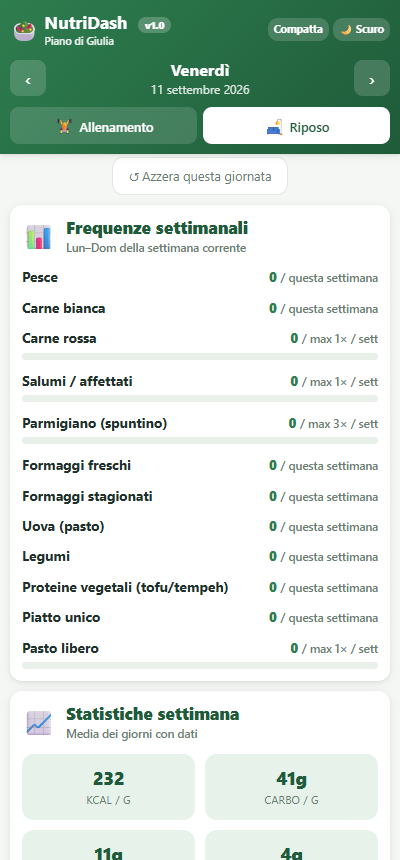
Frequenze settimanali
Molti piani dicono “carne rossa massimo una volta a settimana”, “pesce almeno tre volte”. Qui vedi quante volte hai mangiato ogni categoria da lunedì a domenica e quanto ti manca (o quanto hai sforato).
Statistiche settimana
La media giornaliera di calorie e nutrienti dei giorni che hai compilato, con il grafico dei sette giorni. Serve a vedere l'andamento, non il singolo giorno.
9 Lista della spesa e storico
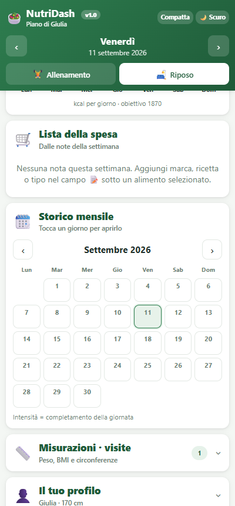
Lista della spesa
Raccoglie gli alimenti che hai usato di più nel periodo scelto (settimana, mese, ultimi 30 giorni), con il numero di volte. Comoda da guardare prima di fare la spesa.
Storico mensile
Il calendario del mese: più una casella è verde, più quella giornata era completa. Tocca un giorno per aprirlo e correggerlo.
10 Peso e misurazioni
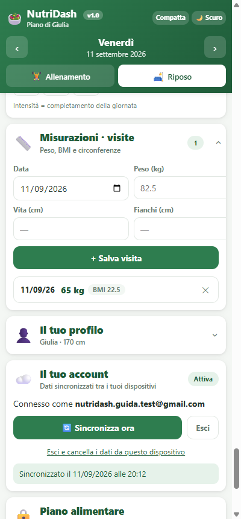
Nella scheda Misurazioni · visite registri il peso e, se vuoi, girovita e fianchi. Il BMI viene calcolato da solo usando la tua altezza. Ogni riga mostra anche la differenza di peso rispetto alla misurazione precedente.
C'è una misurazione per data: se salvi due volte lo stesso giorno, la seconda sostituisce la prima.
11 Il tuo profilo e il PIN
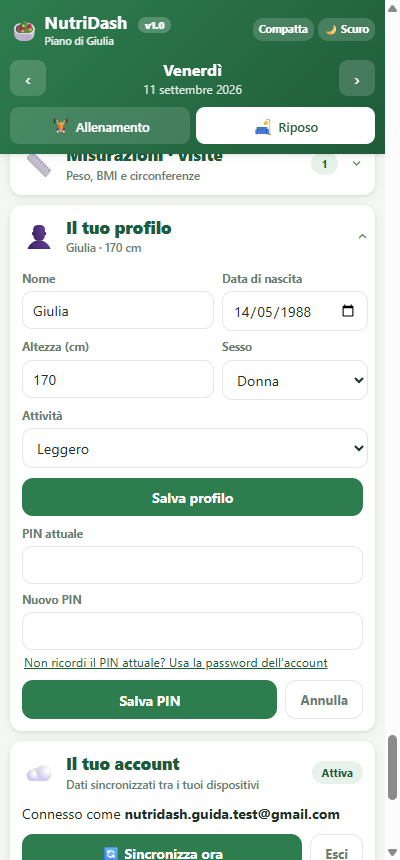
Nella scheda Il tuo profilo cambi nome, data di nascita, altezza, sesso e livello di attività. Ricordati di toccare Salva profilo.
A cosa serve il PIN
Il PIN protegge solo la modifica del piano nutrizionale. Non serve per entrare nell'app né per vedere i tuoi dati: quello lo fa la password dell'account. Serve a evitare che, con un tocco distratto (o un figlio che gioca col telefono), il piano venga stravolto senza accorgersene.
Cambiare il PIN
- Tocca Cambia il PIN del piano.
- Scrivi il PIN attuale e il nuovo PIN.
- Salva PIN.
Se non ricordi il PIN
Nella stessa schermata tocca “Non ricordi il PIN attuale? Usa la password dell'account”: inserisci la password con cui accedi e scegli un PIN nuovo.
12 Modificare il piano nutrizionale
Qui adatti il piano a quello che ti ha dato il nutrizionista: porzioni, alimenti, calorie obiettivo, limiti settimanali.
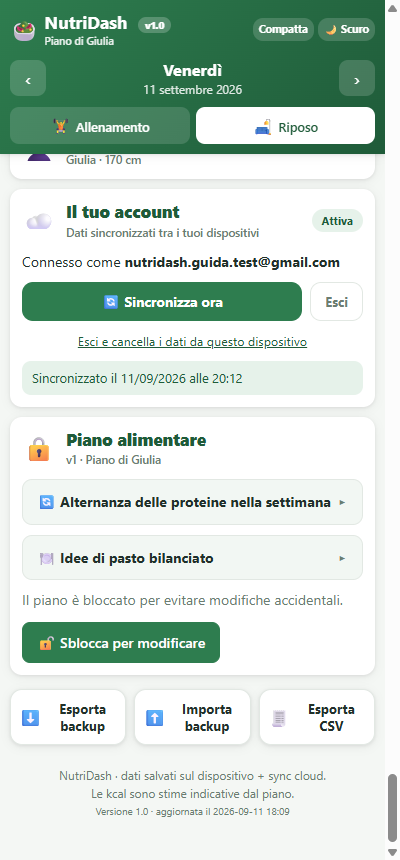
- Scorri fino a Piano alimentare.
- Tocca Sblocca per modificare e inserisci il PIN.
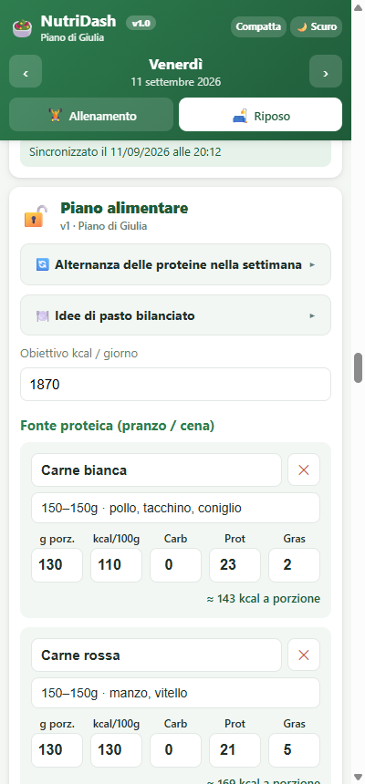
Una volta sbloccato puoi:
- cambiare l'obiettivo kcal del giorno;
- modificare nome, descrizione, grammi della porzione e valori nutrizionali di ogni alimento;
- aggiungere o togliere alimenti da ogni gruppo;
- impostare i limiti settimanali (minimo e massimo) di ogni categoria.
Salva oppure Salva come nuova versione?
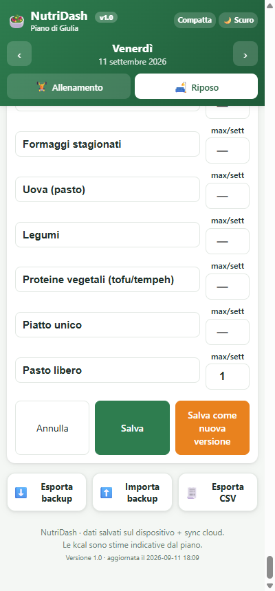
- Salva
-
Corregge il piano attuale. Anche le giornate già registrate vengono
ricalcolate con i nuovi valori.
Usalo quando stai correggendo un errore: un valore sbagliato, un refuso, un grammo digitato male. - Salva come nuova versione
-
Congela il piano attuale e ne crea uno nuovo, valido da oggi in avanti.
Le giornate passate restano com'erano.
Usalo quando il piano cambia davvero: nuova visita, porzioni diverse, alimenti aggiunti o tolti.
Quando esiste più di una versione compare un elenco in cima alla scheda: puoi tornare a una versione precedente quando vuoi, senza perdere nulla.
13 Più dispositivi e sincronizzazione
I dati sono salvati sul dispositivo e copiati nel tuo spazio personale online. Se accedi con lo stesso account dal telefono e dal computer, ritrovi tutto da entrambe le parti.
La sincronizzazione è automatica: quando modifichi qualcosa e quando riapri l'app. Nella scheda Il tuo account vedi l'ultima sincronizzazione e puoi forzarla con Sincronizza ora.
- Esci
- Ti disconnette lasciando i dati su questo dispositivo.
- Esci e cancella i dati da questo dispositivo
- Da usare se presti o cambi il telefono: cancella tutto in locale. I dati restano online e li ritrovi al prossimo accesso.
14 Backup ed esportazioni
In fondo alla pagina ci sono tre pulsanti:
- Esporta backup
- Scarica un file con tutti i tuoi dati. Tienilo da parte ogni tanto, per sicurezza.
- Importa backup
- Ricarica un file salvato in precedenza.
- Esporta CSV
- Scarica il diario in un foglio di calcolo (una riga per giornata con calorie, nutrienti, acqua e completamento): comodo da mostrare al nutrizionista.
15 Aggiornamenti dell'app
Quando esce una versione nuova compare in basso la scritta “È disponibile una nuova versione” con il pulsante Aggiorna. Toccalo: l'app si ricarica aggiornata, senza perdere niente.
In fondo alla schermata principale trovi sempre la versione che stai usando e la data dell'ultimo aggiornamento.
16 Domande frequenti
- Le calorie sono precise?
- Sono stime. Per gli alimenti confezionati i valori arrivano dall'etichetta (lo vedi scritto accanto), per le categorie ampie (“pesce fresco”, “formaggi freschi”) è una media. Vanno benissimo per l'andamento, non prenderle al grammo.
- Posso usare l'app senza internet?
- Sì, dopo il primo accesso. Le modifiche si sincronizzano appena torni online.
- Ho sbagliato a segnare un giorno passato.
- Vai allo storico mensile, tocca quel giorno e correggilo: si aggiorna tutto da solo.
- Un'altra persona può usare l'app sul mio telefono?
- Sì, ma con il suo account: tu esci, lei accede con la sua email. Ognuno vede soltanto i propri dati.
- Se cancello l'app perdo tutto?
- No: i dati sono anche online. Reinstalli, accedi e li ritrovi.